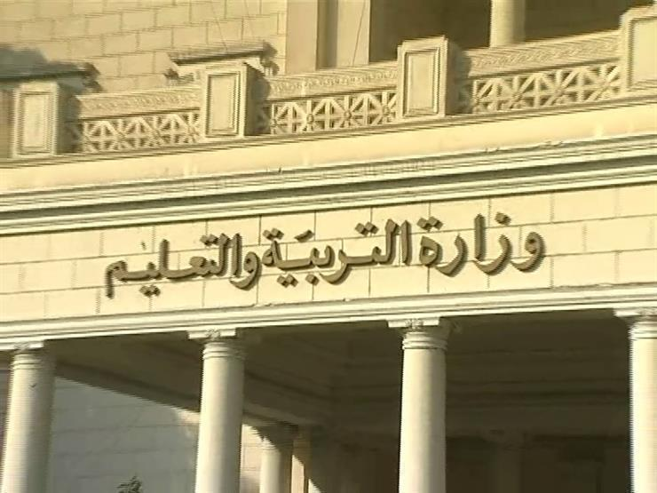

التعليم تعلن مواعيد تدريب معلمي الصف الخامس الابتدائي
أصدرت وزارة التربية والتعليم والتعليم الفني، خطابا إلى لجميع المديريات التعليمية على مستوى الجمهورية، بشأن استكمال خطة التنمية المهنية لمعلمي الصف الخامس الابتدائي للعام الدراسي 2022/2023.وحصلت على صورة من الخطاب الصادر والذي جاء نصه كالتالي: "استكمالا لخطة التنمية المهنية لمعلمي الصف الخامس الابتدائي للعام الدراسي 2022/2023 بالتعاون مع مؤسسة ديسكفري إديوكيشن لتدريب معلمي وموجهي الصفوف العليا بالمرحلة الابتدائية بمصر على النظام التعليمي الجديد (2.0 Education) لبناء منظومة تعليمية متطورة أساسها المعلم المتمكن والقادر على القيام بمهامه وفق خطط التنمية المستدامة، ووفقا لما تم في هذا الإطار على مدار العام من رحلة التنمية المهنية بالتدريبات المباشرة وجها لوجه في قاعات المدينة التعليمية بالسادس من أكتوبر وقاعات الإدارات التعليمية بالمحافظات والتدريبات الأونلاين وانتهاء بتدريبات نصف العام والتي كانت استعدادا لبدء الفصل الدراسي الثاني تقرر انعقاد ورش عمل الجولة الأخيرة من رحلة التنمية المهنية للصف الخامس الابتدائي لهذا العام أونلاين بقاعات الفيديو كونفرانس". وتابع الخطاب: "بناء على ماسبق واستكمالا لسير رحلة التدريبات وفقا لخطة العام الدراسي، تقرر انعقاد ورش عمل الجولة الأخيرة من رحلة التنمية المهنية للصف الخامس الابتدائي لهذا العام أونلاين بقاعات الفيديو كونفرانس المتاحة بالإدارات التعليمية التابعة وسيكون البث المباشر من القاعة الرئيسية بديوان عام الوزارة وفق الجدول التالي:1- الثلاثاء 21 مارس: نصف قوة معلمي مادة العلوم من الساعة 10 صباحا إلى 12 ظهرا، وباقي عدد معلمي مادة العلوم من الساعة 1 مساء إلى 3 مساء.2- الأربعاء 22 مارس: نصف قوة معلمي مادة الرياضيات من الساعة 10 صباحا إلى 12 ظهرا، وباقي عدد معلمي مادة الرياضيات من الساعة 1 مساء إلى 3 مساء.